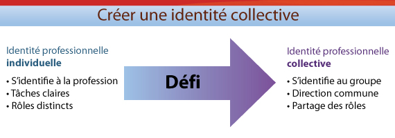

Superviser dans un contexte de CIP
Unité 6.3 Cheminer vers une nouvelle identité professionnelle
Objectif spécifique
- Déterminer des stratégies pour développer l'identité professionnelle collective de vos stagiaires.
1. De l'individuelle à la collective
Examinons la notion d'identité professionnelle, le 2e élément fondamental de l'enseignement du superviseur dans un contexte de CIP. C'est au cours de sa formation et par ses contacts avec ses professeurs, collègues et autres professionnels de la santé qu'un processus de socialisation s'installe chez le stagiaire (Hall, 2005; Hean, Macleod Clark, Adams et Humphris, 2006).
2. Un défi!
Le schéma ci-dessous met en évidence les éléments de la CIP qui posent un défi à l'identité professionnelle individuelle. La CIP s'appuie sur une notion d'identité professionnelle individuelle forte, car l'image de sa profession peut être menacée en contexte de CIP (École en chantier, 2007). Par exemple, le stagiaire peut percevoir le partage des tâches comme une intrusion dans les rôles des autres (École en chantier, 2007). Lorsqu'il est plus confiant en ses rôles, il est plus à l'aise de partager des tâches avec les autres membres de l'équipe interprofessionnelle et d'apprendre des autres professions. Il peut alors cheminer vers une identité professionnelle collective. Lorsque ce mouvement ne s'effectue pas, cela affecte la dynamique de l'équipe (Freeman et al., 2010).
Ce mouvement vers l'identité professionnelle collective se caractérise par :
- Un sentiment d'appartenance à l'équipe de soins.
- Un partage des valeurs et des tâches.
- Une direction commune.
(Brown, Crawford et Darongkamas, 2000; McCalling et McCalling, 2009; Rogers, 2001)
Deux autres caractéristiques permettent de renforcer l'identité professionnelle collective (Jones et Jones, 2011). Il s'agit :
- De l'autonomie de l'équipe dans ses prises de décisions et son fonctionnement.
- D'une allégeance (fidélité) aux valeurs professionnelles individuelles, ainsi qu'aux valeurs de l'équipe (renforce le travail de collaboration).
3. Stratégies pour faire cheminer le stagiaire vers une identité collective
En tant que superviseur, il importe de guider les stagiaires dans le cheminement vers une identité professionnelle collective. Les stagiaires exposés à la CIP indiquent que l'approche est très intéressante et qu'ils apprécient ses bénéfices. Pourtant, certains expriment des inquiétudes quant à la manière dont les tâches et les rôles peuvent être divisés, sans oublier les aspects de nature éthique et légale qui y sont associés (p. ex actes protégés pour chaque profession) (Fougner et Horntvedt, 2011). Afin d'accompagner les stagiaires dans le cheminement vers l'identité professionnelle collective, nous vous proposons certaines stratégies.
- Demander aux stagiaires de préciser ses rôles et ses responsabilités en fonction des besoins du patient.
4. Activité d'intégration
Nous vous proposons une capsule vidéo dans laquelle vous pourrez observer comment il peut être difficile pour des stagiaires de créer une identité professionnelle collective. En observant la manière dont chacun s'acquitte de sa tâche, tentez de trouver comment la superviseure peut encourager le mouvement vers l'identité professionnelle collective.
Visionnez chaque section de la capsule vidéo et cochez toutes les réponses qui vous semblent le mieux correspondre aux stratégies que devrait adopter la superviseure à chaque étape de la rencontre.
La version imprimable (.pdf, 205 Ko) contient le verbatim de la vidéo Protégés et partagés!.